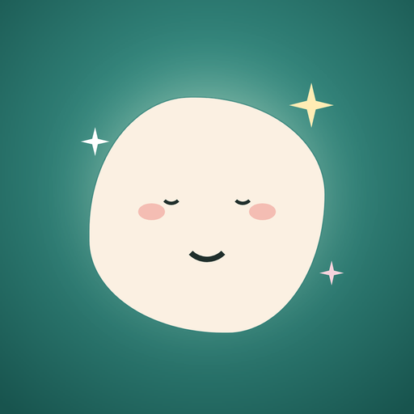
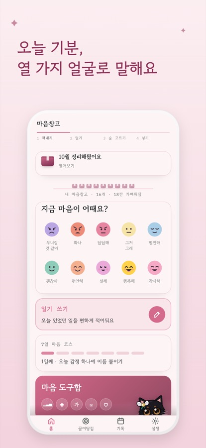
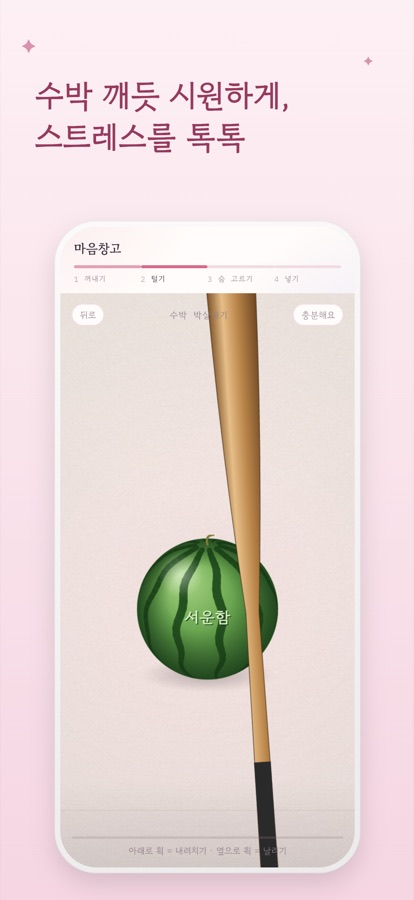
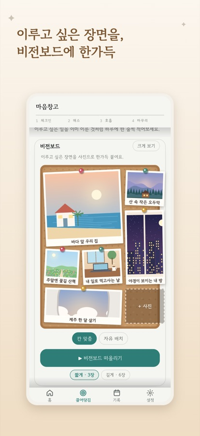
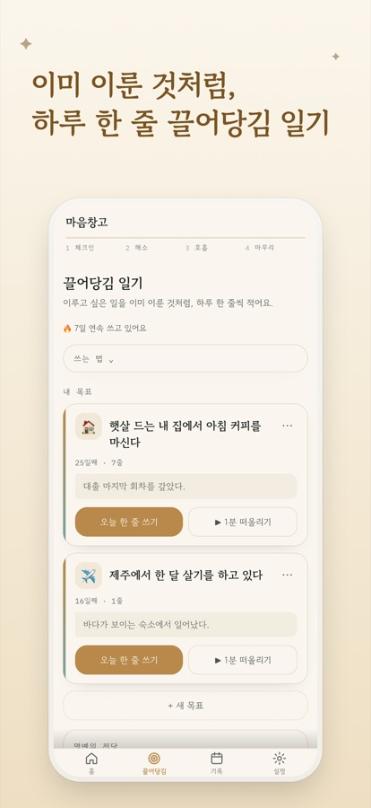
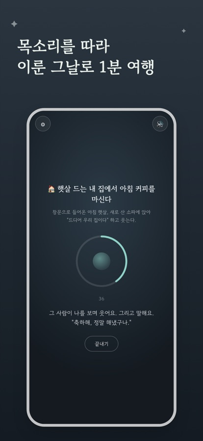
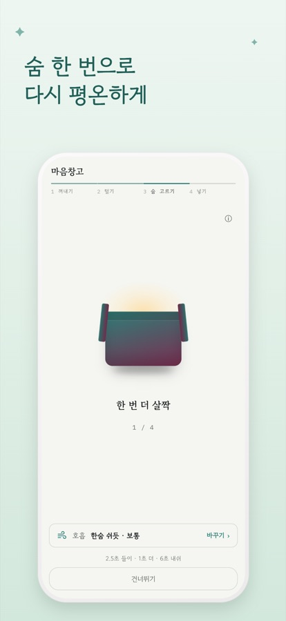
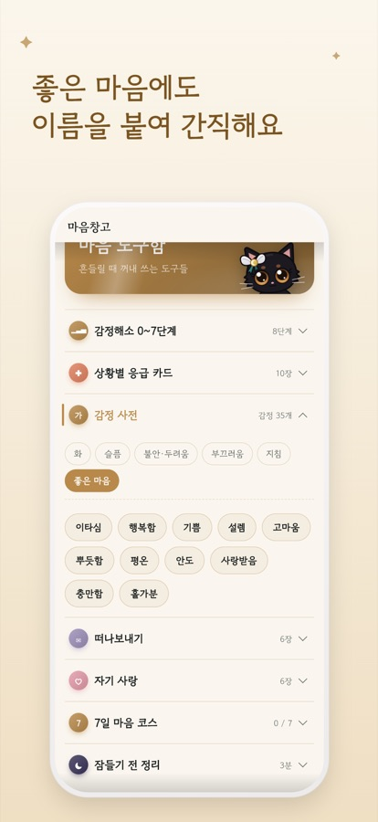
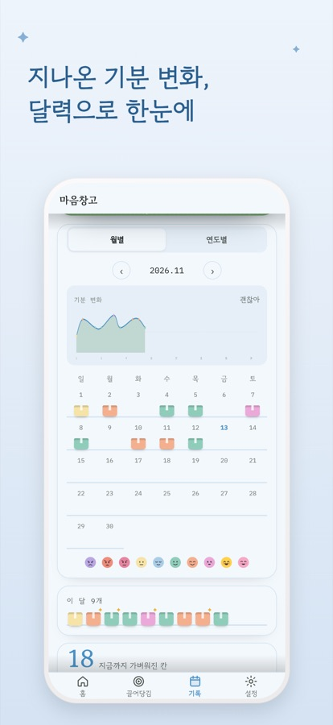

스트레스 해소 · 감정일기 · 끌어당김
쌓인 스트레스는 털어내고,
오늘 감정은 담아 두고,
바라는 삶은 끌어당겨요.
마음창고는 스트레스 해소 앱과 감정일기 앱을 하나로 합쳤어요. 기분을 기록하고, 손으로 스트레스를 풀고, 숨을 고른 뒤 하루를 상자에 담아요. 끌어당김 일기를 쓰고 비전보드는 홈 화면 위젯으로 매일 곁에 둬요.








마음 관리에 필요한 건 전부, 앱 하나에
감정일기 · 기분 기록
오늘 기분을 색깔로 고르고 짧은 일기를 남겨요. 감정 달력으로 날짜별·월별·연도별 변화를 한눈에 봐요.
스트레스 해소 20가지 이상
접시 깨기, 종이 찢기, 캔 찌그러뜨리기, 뽁뽁이 터뜨리기, 소리 지르기. 화날 때 하는 스트레스 해소 게임이에요.
진짜 같은 질감 소리
유리, 나무, 불, 물, 왁스, 금속마다 소리와 진동이 달라서 몸으로 털어내는 느낌이 나요.
호흡 명상 · 숨 고르기
박스 호흡, 4-7-8 호흡, 한숨 호흡까지. 불안할 때, 잠들기 전 1분 만에 마음을 가라앉혀요.
끌어당김 일기
바라는 일을 이미 이룬 것처럼 하루 한 줄. 끌어당김의 법칙을 매일 습관으로 만들어요.
미래의 나에게 편지
지금의 나에게 하고 싶은 말을 적고 받을 날짜와 시각을 정해요. 그날이 되면 과거의 내가 보낸 편지가 알림으로 도착해요.
1분 떠올리기 (시각화)
눈을 감고 목소리를 따라 소원이 이뤄진 그날로 가요. 남자·여자 목소리 중에 골라요.
비전보드 · 홈 화면 위젯
이루고 싶은 장면의 사진을 붙이고 액자·압정으로 꾸며요. 비전보드 위젯으로 매일 봐요.
상태 지도 · 확언
되고 싶은 나의 모습을 그리고 짧은 확언으로 바꿔 매일 읽어요.
무의식에 새기기
잠들기 직전은 무의식이 가장 열려 있는 시간이에요. 확언을 되뇌고 바라는 장면을 1분 동안 떠올려 마음 깊이 새겨요.
마음 도구함
상황별 응급 카드, 감정 사전, 자기 사랑, 떠나보내기, 7일 마음 코스까지.
마음 나무 · 월간 결산
기록할 때마다 그달의 나무에 잎이 돋아요. 지난 나무는 뒷마당으로 가서 숲이 돼요.
이런 분들이 씁니다
회사에서 소리 지르고 싶을 때
누군가에게 터뜨리는 대신 수박을 깨고 종이를 찢어요. 2분이면 어깨가 내려가요.
너무 화가 나서 아무 생각이 안 날 때
SOS 버튼을 누르면 아무것도 고르지 않고 바로 숨 고르기로 가요.
내 감정 패턴이 궁금할 때
감정일기를 쌓으면 어떤 요일, 시간, 이유에 마음이 무거운지 보여요.
끌어당김의 법칙을 실천할 때
끌어당김 일기, 비전보드, 1분 시각화를 한곳에서 해요.
밤에 생각이 꺼지지 않을 때
4-7-8 호흡과 잠들기 전 정리로 하루를 내려놓아요.
나한테 너무 엄격할 때
자기 사랑 카드가 친구에게 하듯 나에게 말하는 법을 알려줘요.
자주 묻는 질문
마음창고는 무료인가요?
네. 감정 기록, 여러 스트레스 해소 방식, 호흡, 기록 보기는 무료예요. Pro는 모든 해소 방식과 마음 도구함, 비전보드 사진을 더 열어 줘요. Pro 이용권은 자동 갱신되지 않아요.
회원가입이 필요한가요?
아니요. 가입 없이 바로 써요. 일기와 사진은 내 폰에만 저장되고, 원하면 파일로 직접 백업할 수 있어요.
소리 지르기 모드에서 녹음하나요?
아니요. 마이크는 소리 크기만 읽어서 화면을 움직이고, 아무것도 녹음하거나 보내지 않아요.
스트레스 해소 앱인가요, 끌어당김 앱인가요?
둘 다예요. 먼저 쌓인 감정을 털어내고, 그다음 끌어당김 일기를 쓰고 비전보드를 봐요. 마음이 가벼워야 바라는 장면도 선명해져요.
비전보드를 홈 화면에 둘 수 있나요?
네. 아이폰·안드로이드에서 마음창고 위젯을 추가하면 비전보드 사진이 홈 화면에서 바뀌어요.
상담이나 치료를 대신하나요?
아니요. 일상 스트레스를 다루는 자기 돌봄 도구예요. 위기 상황이면 앱에서 109 자살예방 상담전화 등 상담 번호를 바로 보여 줘요.
오늘의 마음, 상자에 살며시 담아 두세요.
문의
궁금한 점이나 의견은 메일로 보내 주세요. 모두 읽고 답장드려요.
gasmon0@gmail.com